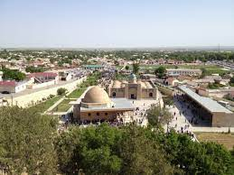
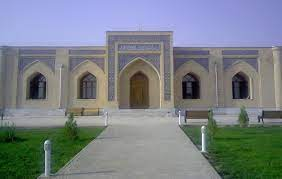
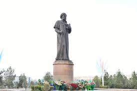

Navoiy |
|||||
| Navoiy |
Navoiy
|
||||
| Toshkent | |||||
| Buxoro | |||||
| Samarqand | |||||
| O'zbekiston | |||||
| Farg'ona | |||||
| Jizzax | |||||
| Xorazm | |||||
| Namangan | |||||
| Qashqardaryo | |||||
| Sirdaryo | |||||
| Surxandaryo | |||||
| Andijon | |||||
Navoiy viloyati Vikipediya, ochiq ensiklopediya Navigatsiya qismiga oʻtishQidirish qismiga oʻtish Navoiy viloyati viloyat Maʼmuriy markazi Navoiy shahri Yirik shahari Navoiy shahri Boshqa yirik shaharlari Navoiy, Zarafshon, Uchquduq shaharlari Asos solingan sanasi 1982-yil Hokim Normat Tursunov[1] Aholi (2022) 1 million (4-oʻrin) Dinlar tarkibi musulmonlar Maydoni 111,100 km² Navoiy viloyati xaritada Navoiy viloyati, Xarita Soat mintaqasi UTC+5 Kod ISO 3166-2 UZ-NW Telefon kodi +99879 Pochta indeksi 210100 Internet domeni uz Avtomobil raqami kodi 85 Rasmiy sayti http://navoi.uz/ Koordinatalari: 42°0′0″N 64°15′0″E G O Navoiy viloyati — Oʻzbekiston Respublikasi tarkibidagi viloyat. 1982-yil 20-aprelda Buxoro va qisman Samarqand viloyatlari hududlaridan tashkil etilgan. 1988-yilda maʼmuriy birlik sifatida tugatilib, 1992-yil boshida qayta tiklandi. Shimoliy va shimoli-sharqdan Qozogʻiston, janubi-sharqdan Jizzax, Samarqand, jan.dan Qashqadaryo, janubi-gʻarbdan Buxoro viloyatlari bilan chegaradosh. Maydoni 111,0 ming km². Aholisi 1 million kishidan oshgan (2022). Navoiy viloyati tarkibida 8 ta tumani (Konimex, Navbahor, Karmana, Nurota, Tomdi, Uchquduq, Xatirchi, Qiziltepa, 5 shahar (Zarafshon, Qiziltepa, Navoiy, Nurota, Uchquduq), 8 shaharcha (Konimex, Langar, Malikrabot, Muruntov, Tinchlik, Shalqar, Yangirabot, Gʻozgʻon) va 53 qishloq fuqarolari yigʻini bor (2003). Markazi — Navoiy shahri Tabiati. Navoiy viloyatining hududi tabiiy sharoitiga koʻra, 3 qismga boʻlinadi: viloyatning shimoli-gʻarbiy qismini Qizilqum choʻli egallagan — bu yerda berk botiqlar (Karaqota, Moʻlali, Mingbuloq), eol qumli tekisliklar va qoldik togʻlar (Ovminzatogʻ, Yetimtogʻ, Boʻkantov, Tomditov va h.k.) bor; janubi-sharqiy qismini Nurota togʻ tizmalarining gʻarbiy qismi past va oʻrtacha balandliklardagi togʻlar (Qoratogʻ, Oqtogʻ va boshqalar) hamda togʻlararo botiqlar (Nurota botigʻi va boshqalar) egallagan; Zarafshon daryosi vohasining oʻrta qismida viloyatning paxtachilik zonasi oʻrnashgan. Navoiy viloyatidagi togʻlar, asosan, silur, devon, toshkoʻmir, bur, paleogen, neogen davrlari jinslaridan tuzilgan. Tekislik va qumliklar toʻrtlamchi geologik davrdagi kompleks tabiiy omillar taʼsirida oʻzgargan. Muruntovda oltin, Ovminzatogʻ shimolida grafit topilgan. Viloyatda volfram, fosforitlar, kvars qumi, sement, ohaktoshning zaxiralari mavjud. Navoiy viloyatida mineral shifobaxsh, shoʻr va yer osti chuqur suv zaxiralari aniqlangan. Chunonchi, Tomdibulok, Qaraqota, Chingildi atroflaridan topilgan suvlardan xoʻjalikda keng foydalanilmoqda. Viloyat seysmik jihatdan 7 balli zilzila zonasiga kiradi. Qizilkum choʻli tufayli iqlimi keskin kontinental choʻl iqlimi: yozi uzoq, quruq. issik, iyulda oʻrtacha temperatura 27,2—29,6°, kumda oftobda temperatura 60—70° gacha koʻtariladi. Yanvarda oʻrtacha temperatura — 1,9° dan —0,6° gacha. Choʻl va yaylovlarda, vohalarda iqlim oʻrtacha. Yogʻin, asosan, bahor va qishda yogʻadi. Yillik yogʻin 125-282 mm. Vegetatsiya davri 177—212 kun. Navoiy viloyatining asosiy suv manbai — Zarafshon daryosi. Zarafshondan Konimex kanali chikarilgan. Navoiy viloyatini suv bilan taʼminlashda Quyimozor, Toʻdakoʻl suv omborlari, Konimex kanalining ahamiyati katta. Viloyatning shim. va gʻarbiy katta qismi koʻchma qum barxanlari, unda-bunda uchraydigan gilli choʻllardan iborat. Astragal, shuvok, shoʻra, isirik, qamish, zarpechak, saksovul, yulgʻun, va boshqa choʻl oʻsimliklari oʻsadi. Choʻl tuproqlarida chirindi kam, ohak, gips, eruvchi tuzlar koʻp. Choʻl oʻsimliklari, ayniqsa, shoʻra, shuvoq kabilar qorakoʻl qoʻylari va boshqa mollar uchun ozuqa boʻladi. Bukantovda va Mingbuloq botigʻida qobon, boʻri, chiyaboʻri, tulki, uzun dumli mushuk, choʻl mushugi, boshqa yerlarda malla yumronqoziq, kalamush, sichqon, sugʻur, sassiqkoʻzan, jayron, kaltakesak, turli xil ilonlar, toshbaqa, qushlardan tuvaloq, qorabovur, olabovur, qirgʻovullar, qargʻa, hakka, musicha, chumchuq uchraydi. Qizilqum choʻlida pastak koʻhna togʻlar, Mingbuloq botigʻi, shuningdek, Qaraqota havzasi, shoʻrxok tekisliklar va pastliklar, qator qum tepalari alohida manzara kashf etgan. Yaylovlarda chorva boqiladi. Saksovul, qandim, cherkez, singren, oqpechak, selin, efemer va shoʻralar chorva mollari uchun ozuqa. Aholisining koʻpchiligini oʻzbeklar (63,3 %) tashkil etadi. Shuningdek, rus (13,5 %), qozoq (11,5 %), tatar (2,6 %), ukrain (1,4 %), qoraqalpoq (1,4 %), tojik (1,3 %), ozarbayjon (0,9 %), belorus (0,2 %) va boshqa millat vakillari yashaydi. 1 km² ga oʻrtacha 7 kishi toʻgʻri keladi. Shaharliklar — 319,7 ming kishiga yaqin, qishloq aholisi — 482,6 ming kishidan ziyod (2003). Xoʻjaligi. Sanoatining yetakchi tarmoqlari energetika, konchilik (oltin va boshqa metallar qazib olish), metallurgiya, kimyo, qurilish materiallari, paxta tozalash, oziq-ovqat sanoati korxonalaridan iborat. Yirik korxonalari: Navoiy kon-metallurgiya kombinati, Navoiy issiqlik elektr stansiyasi, „Navoiyazot“ ishlab chiqarish birlashmasi, „Qizilqumsement“, „Elektrkimyo“, „Nurotamarmar“ korxonalari, mahalliy sanoat konserni. Toʻkma kon chiqindilaridan oltin ajratib oluvchi „Zarafshon-Nyumont“ oʻzbek-amerika qoʻshma korxonasi samarali faoliyat koʻrsatyapti. Ulardan tashqari „Agama“, „Zerispark“, „Bentonit“ va boshqa qoʻshma korxonalar ishlab turibdi. Jami 20 dan ortiq qoʻshma korxona bor. 730 ga yaqin kichik korxona, 30 shirkat korxonasi, 10 mingdan ziyod kichik va oʻrta biznes subʼyektlari faoliyat koʻrsatmoqda. Kichik korxonalardan „Ittifoq“, „Navoiy“ (qurilish materiallari ishlab chiqaradi), „Edem“ korxonalarining hissasi salmoqlidir. Eksport qilinadigan mahsulotlarning aksari qismini paxta tolasi, ammiak selitrasi, kimyoviy tola, sulfat, ammoniy, ortoaminofenol tashkil qiladi. Chetdan xalq isteʼmoli mollari, kalsiy karbid, kaustik soda, tiomochevina, tikuv uskunalari, tibbiy texnika, yuk va yengil avtomobillar, avtobuslar va ularga ehtiyot qismlar, xoʻjalik uskunalari keltiriladi. Qishloq xoʻjaligining asosiy tarmoklari — paxtachilik, gʻallachilik; shuningdek, bogʻdorchilik, tokchilik, sabzavotchilik, pillachilik, chorvachilik mahsulotlari yetishtirish bilan ham shugʻullaniladi. Chorvachiligi koʻp tarmokli. 228 ming donadan ziyod qorakoʻl terisi tayyorlanadi (2003). Navoiy viloyati qorakoʻl teri tayyorlash boʻyicha respublikada 1-oʻrinda turadi. Qishloq xoʻjaligida foydalaniladigan yerlar maydoni 9266,2 ming ga, haydaladigan yer maydoni 111,1 ming ga, yaylovlar 9137,5 ming ga (2003). Barcha ekin maydoni 112,6 ming ga, shu jumladan, paxta 39,4 ming ga, don ekinlari 42,0 ming ga, kartoshka, sabzavot, poliz ekinlari 1,4 ming ga yerga ekiladi. Yerning meliorativ holatini yaxshilash maqsadida 2,6 ming km kollektor drenaj tarmoqlari, 138 zax qochirish qudugʻi qurilgan. Navoiy viloyatida dehqonchilik maydonlari AmuBuxoro mashina kanali Navoiy, Oʻrtachoʻl, Amu, Sumbul, Mayna tarmoklari hamda Zarafshon daryosidan suv oladigan Toss, Shovot, Chovli, Oʻng va Chap qirgʻoq, Navkar, Konimex kanallari orqali suv bilan taʼminlanadi. 32 yirik suv chiqarish elektr nasos stansiyalari ishlab turibdi. Navoiy viloyatida 75 shirkat, 4 ming fermer xoʻjaliklari mavjud. Viloyat jamoa va xususiy xoʻjaliklarida 200,0 ming qoramol (shu jumladan, 96,4 ming sigir), 1458 ming qoʻy va echki, 723 ming parranda bor (2003). Mundarija 1 Hududiy boʻlinishi 2 Geografik joylashuvi 3 Aholisi 4 Tumanlar va Shaharlar 5 Iqtisodiyoti 6 Manbalar 7 Havolalar Hududiy boʻlinishi Navoiy districts.png Tuman nomi Tuman markazi 1 Konimex tumani Konimex (shaharcha) 2 Karmana tumani Navoiy (shahar) 3 Qiziltepa (tuman, Navoiy viloyati) Qiziltepa 4 Xatirchi tumani Yangirabot 5 Navbahor tumani Beshrabot 6 Nurota tumani Nurota 7 Tomdi tumani Tomdibuloq 8 Uchquduq tumani Uchquduq
Transporti. Transport yoʻlilarninguzunligi — 390,7 km, avtomobil yoʻllarniki— 4,1 ming km (shu jumladan, qattiq qoplamalisi — 3,3 ming km). Toshkent— Buxoro — Turkmanobod, ToshkentUchquduq — Nukus yoʻnalishlaridagi temir yoʻl liniyalari viloyat hududidan oʻtadi. Navoiy, Zarafshon, Uchquduq shaharlarida zamonaviy aeroportlar bor. Havo yoʻllari Navoiy shahrini Toshkent orkali respublika viloyatlari va 20 dan ortiq xorijiy davlatlar bilan bogʻlaydi. Madaniy-maorif, sogʻliqni saqlash va sport. 2002/2003 oʻquv yilida viloyatda 376 umumiy taʼlim maktabi boʻlib, 201,3 ming oʻquvchi, 5 gimnaziyada 6,4 mingga yaqin oʻquvchi, 2 akademik litseyda 1040 oʻquvchi, 11 musiqa va 19 sport maktabida 16795 oʻquvchi taʼlim oldi. Navoiy viloyatida 2 oliy oʻquv yurti (Navoiy davlat ped. instituta, Navoiy davlat konchilik instituti) bor. Bu oliy oʻquv yurtlarida 7,7 ming talaba taʼlim oladi (2003). Viloyat shahar va tumanlarida 1998—2003-yillarda 18 kollej va akademik litseylar binolari ishga tushirildi. Ular zamonaviy oʻquv qurollari va texnika bilan jihozlandi. Viloyatda 23 kasb-hunar kollejida 16,03 ming talaba oʻqiydi. Navoiy oʻlkashunoslik muzeyi, uning Qosim Shayx majmuasi filiali va viloyatdagi 7 ta boʻlimi, 253 jamoat kutubxonasi (1893 ming nusxa asar), 105 dan ziyod klub, 7 madaniyat saroyi, 429 badiiy xavaskorlik jamoalari bor. Navoiy viloyatida Yosh tomoshabinlar teatri faoliyat koʻrsatadi. Viloyatda 5 madaniyat va istirohat bogʻi, koʻplab favvorali koʻkalamzor xiyobonlar mavjud. Zarafshon va Navoiy shaharlarida mehnatkashlarning xordiq chiqarishi uchun sunʼiy koʻllar barpo qilingan. Bir qancha tumanlarda bogʻlar yaratilgan. Xalq hunarmandchiligi ham rivojlangan. Sogʻliqni saqlash. Navoiy viloyatida 3223 oʻrinli (10 ming kishiga 45,3 oʻrin), 40 kasalxona muassasasi, 1567 vrach, 7,013 ming oʻrta maʼlumotli tibbiy xodim ishlab turibdi. 85 ayollar konsultatsiyasi, 93 qishloq vrachlik punkta, 116 feldsher-akusherlik punkti, 16 qishloq uchastka kasalxonasi bor. 18 poliklinika, 3 ambulatoriyada ixtisoslashtirilgan davolash markazlari tashkil etilgan. Viloyatda 4 profilaktoriy faoliyat koʻrsatadi. Sport. Navoiy viloyati sportchilari sportning koʻplab turlari boʻyicha nufuzli musobaqalarda ishtirok etmoqdalar (kurash, voleybol, futbol, tennis, boks va boshqalar). Viloyatdan sportning suzish, nafis gimnastika, ogʻir atletika, armestling, pauerlifting turlari boʻyicha mamlakat va Osiyo chempionlari yetishib chiqqan. Markaziy stadion, tumanlarda 13 stadion, 14 suzish havzasi, sport majmui, 190 sport zallari, 1287 sport maydonchalari, 18 tennis korti mavjud. Navoiy viloyatida 19 bolalar va oʻsmirlar maktabida 15 mingdan ziyod oʻquvchi taʼlim oladi, sport seksiyalariga 68 mingga yaqin yoshlar jalb etilgan (2003). Adabiyoti. Navoiy zaminida qad.dan mashhur allomalar, shoir va faylasuflar, adib va muxaddislar, moqir xattot va tarjimonlar yashab oʻtgan. Karminiy taxallusi bilan ijod qilgan bir necha oʻnlab ijodkorlarning nomlari maʼlum. Shulardan Abu Abdulloh Muhammad ibn Zavʼ al Karminiy, Abu Hamid Ahmad ibn Lays al Karminiy (996 yilv.e.), Al Muntasir ibn Muhammad al Karminiy va boshqa Imom Abu Abdulloh Muhammad ibn Zavʼ al-Karminiy Qurʼonga tafsir bitishi bilan birga arab, fors sheʼriyati nazariyasini ishlab chiqqan, ilk marta arab, fors, turk maqollarini qiyosiy oʻrgangan. Najmiddin Abulvafo al-Boʻzjandiy (9asr), Zabeho as-Samarqandiy (16-asr) Karmanada tugʻilib boshqa shaharlarda ijod etganlar. Shuningdek, shoirlar Shayx Pahlavon Muhammad Gʻolib (18-asr), Mavlono Dilkash Tanburiy (19—20-asr boshlari), Shayx Koʻriy Muhammad Hasan (1823 — 1921) va boshqa shu yurt farzandlaridir. 20-asrda Navoiy viloyatidan chiqqan ijodkorlar Buxoro, Samarqand va Toshkent shaharlari adabiy muhitida shakllandilar. Karmanalik shoir Saʼdulla Mahmudovning ilk kitobi 1939-yilda nashr etilgan. Shundan keyin Dushan Fayziy, Toshpoʻlat Hamid, Yodgor Baxshi, Raybulla Salomov, keyinchalik Oydin Hojiyeva, Sulaymon Rahmon, Gʻaffor Hotamov, Hosiyat Bobomurodova, Odil Hotamov, Amir Poʻlkan oʻgʻli, Ashurali Joʻrayev, Marusa Hosilova, Nazira Yoʻldoshevalar adabiyot maydoniga kirib kelishdi. Faylasuf olim Naim Gʻoyibov Ahmad Donish merosidan „Navodir al-vaqoyeʼ“dan lavhalar tarjima qildi. 1990-yillar boshlaridan Aziz Saidov, Halima Ahmedova, Faxriddin Nizomov, Vafo Fayzullayev, Barno Eshpoʻlatov, Bektemir Pirnafasov, Surayyo Zoirova, Farhod Arziyev singari yosh shoirlar faol ijod qilmoqdalar. Ayni paytda qozoq va tojik tilida yozayotgan ijodkorlar safiga rus tilida asarlar yaratayotgan yosh adiblar ham qoʻshildi. Ibodulla Jahongirov ozarbayjon yozuvchisi Anorning „Oq koʻrfaz“ qissasini tarjima qildi. Navoiy viloyatida Oʻzbekiston ijodiy uyushmalari (yozuvchilar, rassomlar, meʼmorlar, jurnalistlar va boshqalar)ning viloyat tashkilotlari faoliyat koʻrsatmoqda. Matbuoti, radio va te-levideniyesi. Navoiy viloyatida 2 gaz. („Doʻstlik bayrogʻi“, „Znamya drujbi“), 9 tuman gaz., 1 shahar gaz. chiqadi. Viloyatda, shuningdek, 22 tarmoq va tijorat gaz., 2 jurnal nashr etiladi. Navoiy viloyatida dastlabki radio-eshittirishlar 1982-yilda boshlangan. 1982-yildan viloyatda telestudiya tashkil etilib telekoʻrsatuvlar berila boshladi. Viloyatda shuningdek, „Qizilqum“ (2002-yildan) nodavlat telekanali koʻrsatuvlar olib boradi. Meʼmoriy yodgorliklar. N.vda kad. davr, ilk va oʻrta asrlarda qurilgan 10 dan ziyod meʼmoriy yodgorliklar bor. Shulardan qad. Karmanadagi Mirsaid Bahrom maqbarasi (11-asr), Qosim Shayx meʼmoriy majmuasi (16-asr), Katta Gumbaz masjidi (17—18-asrlar), Qiziltepa tumani Vangʻozi qishlogʻidagi Toshmachit (16— 19-asrlar), Nurota tumanidagi Abdullaxon bandi (16-asr), Buxoro — Navoiy yoʻlidagi Raboti Malik karvonsaroy va sardobasi (11-asr) mashhur. Viloyatda 30 ga yaqin arxeologiya yodgorliklari mavjud. Ayniqsa, Navbahor tumani Uchtut qishlogʻidagi shaxta (neolit davri), Nurota tumani hududidagi Qoratogʻda oʻyib yozilgan qoyatosh yozuvlari (miloddan avvalgi 3-asr) va boshqa tarixchilar diqqatidadir. Qahramon Rajabov, Zulxumor Abdiyeva, Barno Eshpoʻlatov[2] Bu maqola Navoiy viloyati haqidadir. „Navoiy“ soʻzining boshqa maʼnolari uchun ushbu sahifaga qarang. Navoiy viloyati — Oʻzbekiston Respublikasining eng yosh viloyati hisoblanadi. U dastlab, 1982-yil 20-aprelda Qizilqum sahrosining maʼlum bir qismini oʻzlashtirish va u yerdagi tabiat boyliklardan unumli foydalanish maqsadida tashkil etilgan edi. [[Andoza:]] Geografik joylashuvi Navoiy viloyati Oʻzbekiston Respublikasi hududining oʻrta qismida joylashgan boʻlib, Qizilqum sahrosining kattagina qismini egallaydi. Uning maydoni 110,8 ming km² ga teng, bu jihatdan u eng katta viloyat hisoblanadi. Navoiy viloyati gʻarbda Qoraqalpogʻiston, shimolda Qozogʻiston, sharqda Jizzax, janubda Qashqadaryo va Buxoro viloyatlari bilan chegaralanadi. Aholisi Navoiy viloyati aholisi 986,4 ming kishini tashkil etadi.Aholisini asosiy qismini Oʻzbeklar tashkil etadi. Tumanlar va Shaharlar Navoiy viloyati hududi sakkiz qishloq tumanlariga boʻlingan. Bular quydagilar: Karmana, Konimex, Navbahor, Nurota, Tomdi, Uchquduq, Xatirchi, Qiziltepa, Qiziltepa. Viloyatda ikkita katta shahar : Navoiy, Zarafshon, oʻttiz sakkizta shahar mavjud. Uning maʼmuriy markazi Navoiy shahridir. Iqtisodiyoti Navoiy viloyati ahamiyatli tabiiy resurslarga, shu jumladan, tabiiy gaz, neft, rangli metall va qurlishi uchun xom-ashyo materiallariga boy hisoblanadi. Viloyat iqtisodiyotining asosiy tarkibi yirik konchilik, metallurgiya va kimyoviy majmualardan iborat. Navoiy viloyatida joylashgan Navoiy kon-metallurgiya kombinati Arxivlandi 2008-06-01 Wayback Machine saytida. (NKMK) dunyoda eng sof oltin ishlab chiqaruvchilardan biridir. Viloyatda, shuningdek, sement zavodi, kimyo majmui va bir qator yirik sanoat zavodlari faoliyat koʻrsatmoqda. Qishloq xoʻjaligining asosiy mahsulotlari bu paxta va qorakoʻl qoʻy mahsulotlaridir. Agar kerakli sugʻorish manbalari topilib yoʻlga qoʻyilsa, unda viloyat hududidagi yerlarning 90 %ida unumdorlik salohiyati mavjud boʻladi. Manbalar „Navoiy viloyati hokimi oʻzgardi“, Kun.uz (8-noyabr 2021-yil). OʻzME. Birinchi jild. Toshkent, 2000-yil Havolalar • Rasmiy Vebsayt • Region.uz-Navoiy Arxivlandi 2007-10-22 Wayback Machine saytida. • Navoiy Viloyat Kutubxonasi[sayt ishlamaydi] • Navoiy viloyati sayti Arxivlandi 2017-10-27 Wayback Machine saytida.
[yashir]vte Oʻzbekiston Oʻzbekiston Respublikasi maʼmuriy-hududiy boʻlinishi Viloyat huquqiga ega shahar Toshkent • Xiva • Shahrisabz Respublika Qoraqalpogʻiston Viloyatlar Andijon • Buxoro • Jizzax • Qashqadaryo • Navoiy • Namangan • Samarqand • Surxondaryo • Sirdaryo • Toshkent • Fargʻona • Xorazm Fargʻona viloyatiga qarashli eksklavlar Jangail • Chong-Kara • Shohimardon • Soʻx [koʻrsat]vte Navoiy viloyati Enciklopedia stub.png Ushbu maqolada Oʻzbekiston milliy ensiklopediyasi (2000-2005) maʼlumotlaridan foydalanilgan. Turkum: Koordinatalar VikimaʼlumotlardaOʻzbekiston viloyatlariNavoiy viloyatiAlisher Navoiy sharafiga nomlangan joylar Navigatsiya Siz tizimga kirmagansiz Munozara Qoʻshilgan hissa Hisob yaratish Kirish MaqolaMunozaralotin/кирилл MutolaaTahrirlashManbasini tahrirlashTarix Qidiruv Vikipediyadan qidirish Bosh Sahifa Tanlangan maqolalar Yangi sahifalar Tasodifiy maqola Maqolalar indeksi Loyihaga koʻmak Ishtirok Xato haqida xabar berish Yangi oʻzgarishlar Jamoa portali Qoidalar Yordam Forum Aloqa Asboblar Bu yerga ishoratlar Bogʻliq oʻzgarishlar Maxsus sahifalar Doimiy havola Sahifa haqida maʼlumot Sahifadan matn parchasi ajratish Vikimaʼlumotlar bandi Nashr/eksport qilish PDF sifatida yuklash Bosma uchun versiya Boshqa loyihalarda Vikiombor Boshqa tillarda العربية English Español हिन्दी Qaraqalpaqsha Русский Türkçe اردو 中文 Yana 44 ta tilda Ishoratlarni tahrirla Bu sahifa oxirgi marta 18-May 2022, 18:06 da tahrir qilingan. Matn Creative Commons Attribution-ShareAlike litsenziyasi boʻyicha ommalashtirilmoqda, alohida holatlarda qoʻshimcha shartlar amal qilishi mumkin (batafsil).